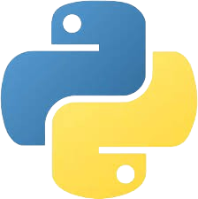

Java
Java- Selenium
- Cucumber
-
 Serenity
BDD
Serenity
BDD
-  Python
 Git
Git- Java
- Selenium
- Cucumber
-
Serenity
BDD
- Python
- Git
Desenvolvimento de scripts de automação robustos e eficientes.
Planejamento e execução de testes manuais com foco na descoberta de cenários críticos.
Definição de estratégias de teste e otimização de processos de qualidade.
Sou um profissional de QA com 3 anos de experiência, apaixonado por garantir a qualidade de software através de testes manuais detalhados e automação eficiente. Tenho um perfil técnico e analítico, sempre buscando otimizar processos e desenvolver soluções inovadoras.
Minhas principais contribuições incluem o script de aceleração e o validador de BDD. Atualmente, lidero iniciativas para elevar o nível de qualidade em diversas equipes.
Anos de experiência
Cenários Automatizados
Aumento de cobertura de testes automatizados em 1 ano
Desenvolvi uma ferramenta em Python para validar e padronizar
automaticamente cenários de teste escritos em Gherkin (arquivos
.feature). O gherkin_validator utiliza a
biblioteca gherkin-official para analisar a estrutura
dos cenários, identificar erros comuns na ordem das palavras-chave
(Given, When, Then), problemas na estrutura de exemplos e outros
desvios de padronização.
A ferramenta gera relatórios detalhados em formatos
.docx e .xlsx, apontando os erros
encontrados e facilitando a correção. Além disso, produz um
relatório de cobertura de automação baseado em tags
(@automatizado, @automatizar,
@manual), oferecendo uma visão clara do status dos
testes.
Tecnologias utilizadas: Python, gherkin-official, python-docx, openpyxl, pandas, argparse.
Este projeto representa uma iniciativa de estudos e exploração da biblioteca Playwright em conjunto com Python para automação de testes web. O foco foi em aprender e aplicar os recursos do Playwright para interagir com navegadores modernos, manipular elementos da página e executar ações de teste de forma eficiente.
Embora seja um projeto inicial de aprendizado, ele demonstra a capacidade de configurar um ambiente de automação com essas tecnologias, escrever scripts de teste básicos e explorar as funcionalidades oferecidas pelo Playwright para diferentes cenários de teste em aplicações web.
Tecnologias utilizadas: Python, Playwright.
Desenvolvi este aplicativo como uma solução pessoal para otimizar o registro e a gestão das minhas horas de trabalho e tarefas diárias. Utilizando Dart (provavelmente com Flutter para o front-end) e PHP para o backend, o objetivo foi criar uma ferramenta prática e eficiente para organizar e contabilizar o tempo dedicado a cada atividade, facilitando o acompanhamento e a geração de relatórios.
Este projeto demonstra a aplicação de desenvolvimento mobile e backend para resolver uma necessidade cotidiana, focando na usabilidade e na automação de um processo manual.
Tecnologias utilizadas: Dart (Flutter), PHP.
Iniciei o desenvolvimento de um aplicativo em Flutter (Dart) com o objetivo de auxiliar na gestão do negócio de confeitaria da minha esposa, a 'Sunshine Cakes'. A ideia é criar uma ferramenta que possa, futuramente, facilitar processos como controle de pedidos, catálogo de produtos, gestão de receitas e clientes ou outras necessidades específicas do dia a dia da confeitaria.
Este projeto reflete meu interesse em aplicar minhas habilidades de desenvolvimento para criar soluções práticas e personalizadas, explorando o potencial do Flutter para interfaces amigáveis e funcionais.
Tecnologias utilizadas: Dart, Flutter.
Um canal que surgiu da necessidade de alguém com dificuldade de aprender as coisas e que quer repassar conhecimento.
Visitar Canal QAFelpsVamos conversar! Adoraria ouvir sobre seus projetos ou oportunidades. Você pode me encontrar nas seguintes plataformas: